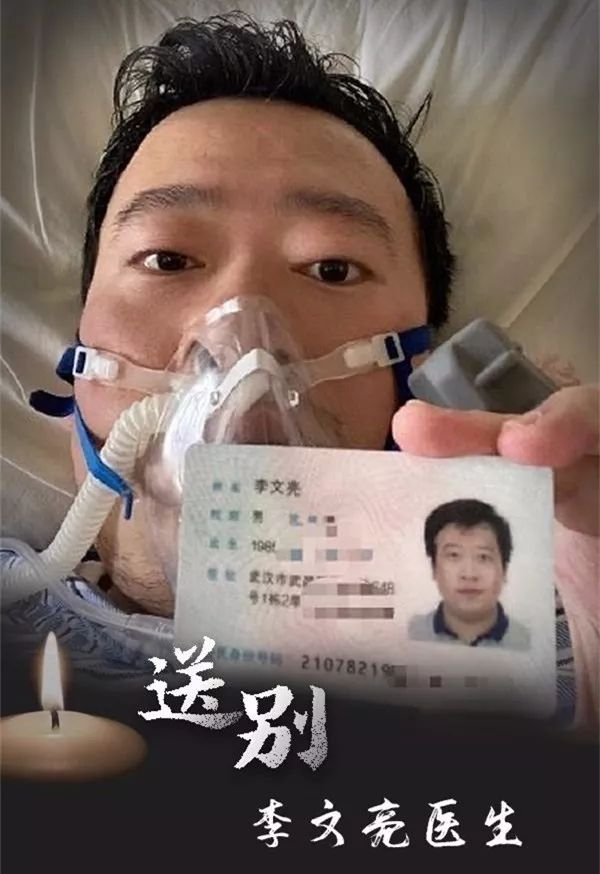
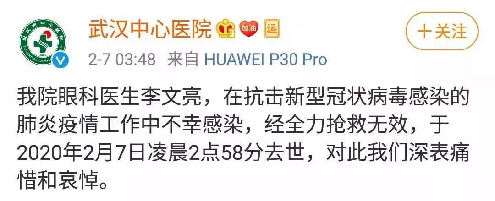
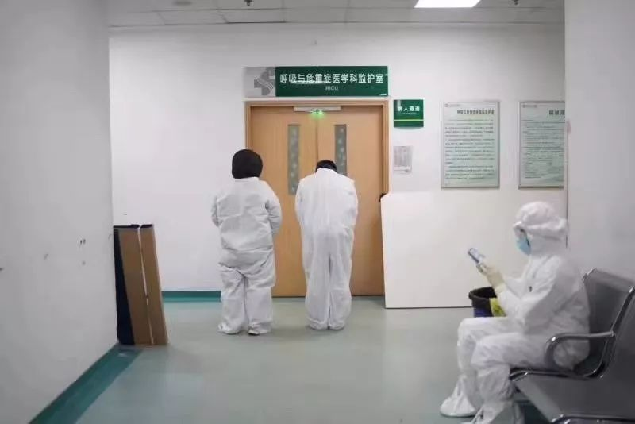

受训诫的武汉医生：11天后被病人传染住进隔离病房，之前群内言论被断章取义 | 深度对话
原文链接 备份链接 Original 北青深一度 北青深一度 北青深一度 About Feature 北京青年报深度报道部官方公众号。提供更深一度，更快一步的时事新闻资讯，守望变革中国的纵深阅读。 Today 记者/ 韩谦 编辑/ …
记者/韩谦 李东 佟晓宇 曹慧茹 魏晓涵 郭慧敏 梁婷 实习生/陈威敬
编辑/杨宝璐 宋建华

李文亮医生一路走好（图片来源/人民日报新媒体）
2月7日凌晨2点58分，武汉市中心医院眼科医生李文亮在抗击新型冠状病毒感染的肺炎疫情中不幸感染，因病情恶化，经抢救无效去世。此时，距离他确诊为感染新型冠状病毒，只过去了不到一周时间。
*武汉市卫健委7日凌晨发布公告，向李文亮医生表示沉痛哀悼并向其家属表示深切慰问！*
深一度记者在2月7日零时零五分时，从一名微博认证为武汉市中心医院急诊科护士的@李梦萍Camille处获悉，李文亮仍在通过人工肺（ECMO）进行抢救，抢救于当晚9时许开始。她表示，“这个病本来病情变化就很快，可能前一刻还在说话的人，后一刻就不行了”。

武汉中心医院凌晨3点48分在官微发布消息

**2月1日确诊，病情多次反复
**
2月1日，李文亮向深一度记者描述自己的病情：“还是呼吸困难，肺功能恢复比较慢。”当日，他拒绝继续接受其他媒体采访，“有点累，我想先好好养病”。李文亮认为，肥胖或许是导致他恢复缓慢的原因。
负责护理李文亮的一名护士此前在接受媒体采访时表示，李文亮发烧很严重，经常都是39.6度、39.7度，打针用药都没用，而且呼吸困难。“严重的时候，他表情痛苦，上气不接下气，面色紫绀，我就给他戴上面罩，高流量吸氧。”
在接下来几天，李文亮的病情一直反复。按照医生的指示，她给李文亮使用了佐克（消炎药）、左氧氟沙星（抗菌消炎）、利巴韦林（抗病毒）、奥司他韦（抗病毒），还有丙种球蛋白，用来增强病人的免疫力。李文亮在接受记者采访时表示，治疗使用的免疫球蛋白是自费托人从外面买的，一瓶价格在600元，每天需打8瓶。
李文亮的朋友圈设置为“仅三天可见”。他热爱美食，朋友圈里晒过很多食物，自从生病后，他就没怎么发过朋友圈了，如今，朋友圈只剩下一条线和冰冷的十三个字。
至迟从2月5日开始，李文亮便感受到了病情的加重。这天下午，李文亮通过微信告诉财新记者，其病情有所反复。“这两天不如之前，高流量+面罩氧饱也只有88-99，呼吸困难加重、氧饱（血液氧气饱和度）87、心率122。我前天（2月3日）动脉血氧分压110，今天只有64了。”

7日凌晨，抢救李文亮医生的呼吸与危重症医学监护室门外 摄影/财新丁刚
医生曾表示病情将出现拐点
1月10日，李文亮开始出现咳嗽、发烧，CT结果显示双肺多发感染，磨玻璃样病变。他于1月12日住院，14日转至呼吸科隔离病房。此后，他又逐渐出现呼吸加重的问题，于24日转至重症监护室。
1月26日，李文亮表示，“医生说这几天应该就该开始出现拐点，但是肺功能恢复时间比较慢。”
1月28日，李文亮接受深一度采访时描述自己病症的发展过程，“我一开始主要就是发热、恶心，后来高烧慢慢退了，觉得有希望了。但是16号之后呼吸困难加重，完全不能下床，大小便都在床上。24号转到呼吸内科重症监护室。现在采用抗生素、激素、抗病毒类药物和高流量吸氧治疗。”
李文亮从未去过华南海鲜市场，他认为自己被感染是因为接诊了一名疑似病人。“1月7、8号的时候，我接诊了一名急性青光眼的病人，她住院的第二天开始发热。发热后马上做了肺部CT和呼吸道病毒，支原体、衣原体检测。肺部CT检测出来是肺部磨玻璃样病变，符合新型冠状病毒感染的肺炎表现。” 在病人出现发热症状后，医生开始被要求佩戴N95口罩，而在此前病人尚未发烧时，医生们并未戴口罩。
李文亮曾两次做核酸检测，第二次为阴性，直到2月1日，他告诉深一度记者，前一天所做的第三次核酸检测结果为阳性，至此，方才确诊感染新冠肺炎。
2月2日下午，在与纪录片导演赵琦的交流中，李文亮表示自己呼吸仍困难，肺功能恢复比较慢，医生估计还要住院两周。
李文亮考虑过，等身体康复之后，自己还要继续上一线参与救治工作，“现在疫情还在扩散，不想当逃兵”，“大家都不去，怎么办？”
李文亮父母在他出现症状后两天被感染，出现发热、呕吐的症状，肺部CT同样呈现磨玻璃样病变。“他们是1月15、16号左右住院治疗的，当时床位已经很紧张了。”目前，李文亮父母已治愈出院。
李文亮同妻子自1月11日起便未见过面，怀有身孕的妻子目前在外地娘家。李文亮此前接受深一度记者采访时表示，“我每天都和老婆视频聊天，她每天都在鼓励我，让我积极治疗，她和儿子都在等着我。我目前呼吸困难，说话不太方便，一般都是她说我听。”

李文亮医生在几天前还表示，身体恢复后就上一线
有人因他而“避过一劫”
2月6日晚上，媒体发布李文亮去世之后，另一则消息传来，称李文亮正在接受ECMO抢救，李文亮曾经就读学校的校友会同学们也纷纷互相咨询消息。7日0点38分，武汉中心医院官微发布消息，李文亮医生“目前病危，正在全力抢救中”。
让李文亮走进人们视线的是一张2019年12月30日的聊天记录截图：他在大学同学群内称，“华南水果海鲜市场确诊了7例SARS，在我们医院急诊科隔离”。此后，他在派出所签署了一份《训诫书》。
李文亮认为，那张被广泛传播的截图的确存在断章取义，“当时在群里一开始说了‘确诊7例SARS’，不太准确，后来我又强调是冠状病毒，具体还在分型。”
1月28日，最高人民法院微信公众号发布文章称，“尽管新型肺炎并不是SARS，但信息发布者发布的内容，并非完全捏造，但如果社会公众听信了这个‘谣言’，并基于对SARS的恐慌而采取了佩戴口罩、严格消毒、避免再去野生动物市场等措施，这对我们今天更好地防控新型肺炎，可能是一件幸事。”
家人都在武汉的张江便自称是因李文亮的“预警”而获益的人。“我个人万分感谢他，让我一月初就开始让家人朋友戴口罩。”
带有上述内容的截图在1月1日传到了张江的高中群，“我是经历过非典的人”。2003年非典时期，张江正在北京读大学，他的大学班主任和他的妻子先后确诊非典离世，留下一个女儿。
当天，张江在网上下单，给家人购买了300个一次性口罩和3个防毒面罩。家人不信，张江就每天劝说、提醒。现在张江因工作停留在上海，家人在武汉不能下楼。张江称，一家人“避免了这一劫”。
34岁的李文亮喜欢明星肖战、《庆余年》和动漫，爱发微博。去年生日那天，李文亮在微博里写道，“今天又是忙碌的一天，患者多了心情难免有些急躁，感谢每个患者对我的体谅……”新的一岁，他希望“能做一个简单的人，看得清世间繁杂却不在心中留下痕迹，保持足够的平常心。”
（文中张江为化名）


一个高铁“密切接触者”的自白：他就坐我旁边，没摘过口罩 | 深度报道

鄂A牌车30小时归乡记 | 深度报道

一个武汉红十字会志愿者的自述 | 深度报道


原文链接 备份链接 Original 北青深一度 北青深一度 北青深一度 About Feature 北京青年报深度报道部官方公众号。提供更深一度，更快一步的时事新闻资讯，守望变革中国的纵深阅读。 Today 记者/ 韩谦 编辑/ …
原文链接 备份链接 在接受媒体采访时，被问及康复后有什么计划，李文亮说：“恢复以后还是要上一线，疫情还在扩散，不想当逃兵！至于疫情以后的事，还没想太多。” 全文2071字，阅读约需4分钟 2月7日凌晨，武汉中心医院官方微博发布消息：我院 …
原文链接 备份链接 他曾说，“等病好了，还上一线，不想当逃兵。” 2月7日中午13:02，中央纪委国家监委网站发布消息，经中央批准，国家监察委员会决定派出调查组赴湖北省武汉市，就群众反映的涉及李文亮医生的有关问题作全面调查。 2月6日 …
原文链接 备份链接 疫情发展 根据丁香医生实时数据，截至 2020 年 2 月 6 日 18 时，全国累计确诊病例 28129 例，疑似病例 24702 例，新增确诊病例 3766 例，新增疑似病例 5328 例。其中，重症病例 3859 …
原文链接 备份链接 记者 | 童兰 截至2月3日24时，新型冠状病毒肺炎疫情目前已经导致了425人死亡和20438例确诊感染，而且仍在不断攀升。作为最易感染的人群之一，密切接触者追踪力度的加强和人数的增长，暗示了未来感染人数增加的压力。 …